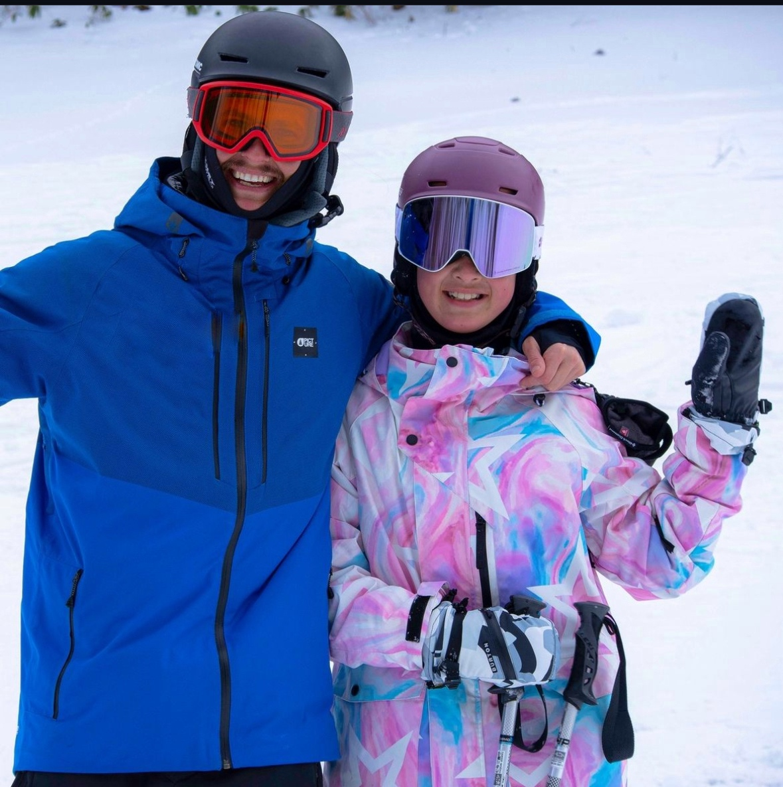

“
Jose transformed our ski holiday into a dream. Everything was personalised, professional and fun. From technique work to exploring off-piste—every detail was handled.
CLIENT EXPERIENCES
Every skier comes to Niseko with different goals, experience and expectations. My aim is to make each day feel personal, enjoyable and worthwhile.

WHAT CLIENTS SAY
From first turns to powder and off-piste adventures, the goal is always the same: understand what you want from your time on the mountain and build the day around it.
Jose transformed our ski holiday into a dream. Everything was personalised, professional and fun. From technique work to exploring off-piste—every detail was handled.
As a first-timer, I felt completely safe and supported. By the end of the week, I was skiing confidently. Jo's patience and teaching style are exceptional.
Our kids absolutely adored Jo. They learned fast, laughed a lot and asked to come back next year.
From the slopes to the après-ski spots, Jo curated an experience that felt 5-star throughout.
MORE THAN A LESSON
Technique, powder, trees, off-piste terrain or simply finding the best snow available — your time on the mountain should reflect what you want to experience.
Plan Your Ski DayNISEKO • HOKKAIDO • JAPAN
Tell me about your group, your skiing and what you'd like to experience in Niseko.
Get in Touch